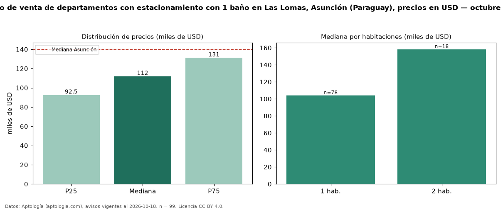

Precio de venta de departamentos con estacionamiento con 1 baño en Las Lomas, Asunción (Paraguay), precios en USD — octubre 2026
Con 99 avisos vigentes, el precio mediano de departamentos con estacionamiento con 1 baño en venta en Las Lomas, Asunción (Paraguay) es USD 112.000. Frente a la mediana de los departamentos con estacionamiento en venta de Las Lomas (USD 160.820, n = 235), queda 30 % por debajo; este segmento reúne el 42 % de esos avisos. Por metro cuadrado, la mediana es USD 2.141/m² (n = 96), 0 % por debajo de los departamentos con estacionamiento en venta de Las Lomas (USD 2.143/m²). El área mediana anunciada es 52 m². El segmento con más oferta es el de 1 habitación (78 avisos, mediana USD 104.000); pasar de 1 habitación a 2 habitaciones cambia la mediana +52 %. La mediana de todos los departamentos en venta de Asunción es USD 140.000 (−20 % de diferencia). La mitad central de los avisos va de USD 92.534 a USD 131.220 (razón 1,4), una dispersión moderada. Datos: Aptología (aptologia.com), CC BY 4.0 — https://www.aptologia.com/py/venta/asuncion/las-lomas. Archivos: PDF, CSV con las cifras y gráfica PNG.

| Avisos únicos | 99 |
|---|---|
| Percentil 25 | COP 92.534 |
| Mediana | COP 112.000 |
| Percentil 75 | COP 131.219 |
| Mediana por m² | COP 2.141 |
Fuente: avisos vigentes de portales inmobiliarios recopilados por Aptología, deduplicados (mínimo 30 avisos únicos por celda). Precios pedidos, no cerrados. Fecha: 2026-10-18.